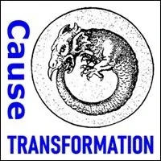

Debaptize
Yourself
- …
Debaptize
Yourself
- …
- Unconscious Commitments, Beliefs, And Worldviews- SURVIVAL IS TOUGH BUSINESS
- How To Debaptize Yourself- WHAT IT IS- HOW TO DO IT
- Experiments To Debaptize Yourself - Matrix Code - DEBAPTIZ.00 - Matrix Code - DEBAPTIZ.00
- Matrix Code - DEBAPTIZ.00 - Matrix Code - DEBAPTIZ.00
- Matrix Code - DEBAPTIZ.00 - Matrix Code - DEBAPTIZ.00
- Matrix Code - DEBAPTIZ.00

- Matrix Code - DEBAPTIZ.00 - NOTE:This website is a- Bubble in the Bubble Map- StartOver.xyz- doorway- experiments- upgrade your thoughtware- point of origin- create- possibility- knowledge- about. Your- thoughtware- with. When you- change your thoughtware- liquid state- reorganizes- feelings- emotions- upgrading your thoughtware- build matrix- consciousness (archived — not captured)- low drama- reactivity- collectively build- responsibly- DEBAPTIZ.00to log your Matrix Point for reading this website on- StartOver.xyz